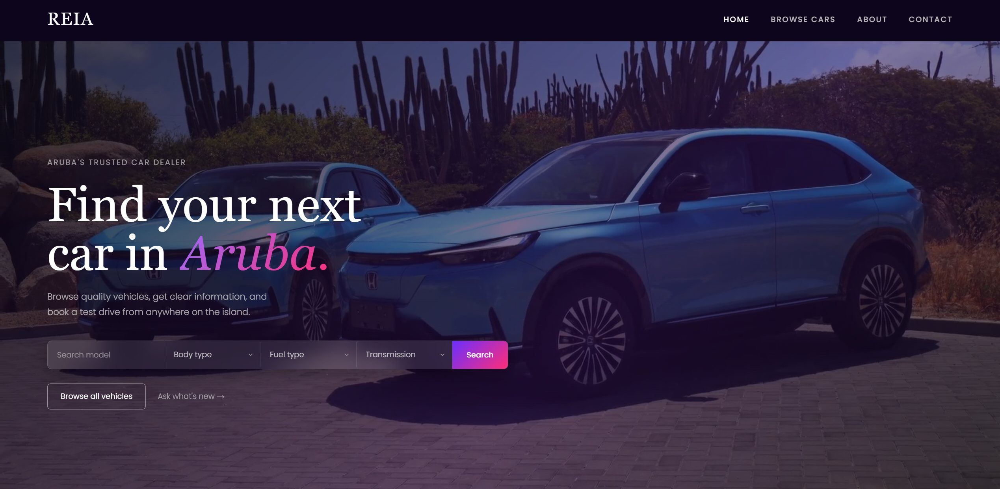

01 — The client
A used-car dealer in Oranjestad
REIA Motors is a used-car dealer in Oranjestad, Aruba, which also imports cars.

02 — The brief
Clean, sleek, luxurious, and easy to manage
The client wanted a website that feels clean, sleek and luxurious, and one they could manage themselves without calling a developer every time a car is sold or added.
03 — Challenge
Making a pink-purple gradient feel premium
The client’s brand colour is a pink-purple gradient. Used everywhere, it can easily feel loud rather than luxurious. My solution was restraint: the gradient appears only in a few deliberate places.
Everything else stays calm and neutral, so the gradient reads as a signature rather than decoration.
04 — Challenge
A CMS the client could use
The client wanted to manage their own listings. I set up Decap CMS on top of a GitHub repository, deployed through Netlify, so they can add, edit and remove cars through an editor instead of touching code.
05 — My role
Design and build, end to end
See it live
reiamotors.com ↗